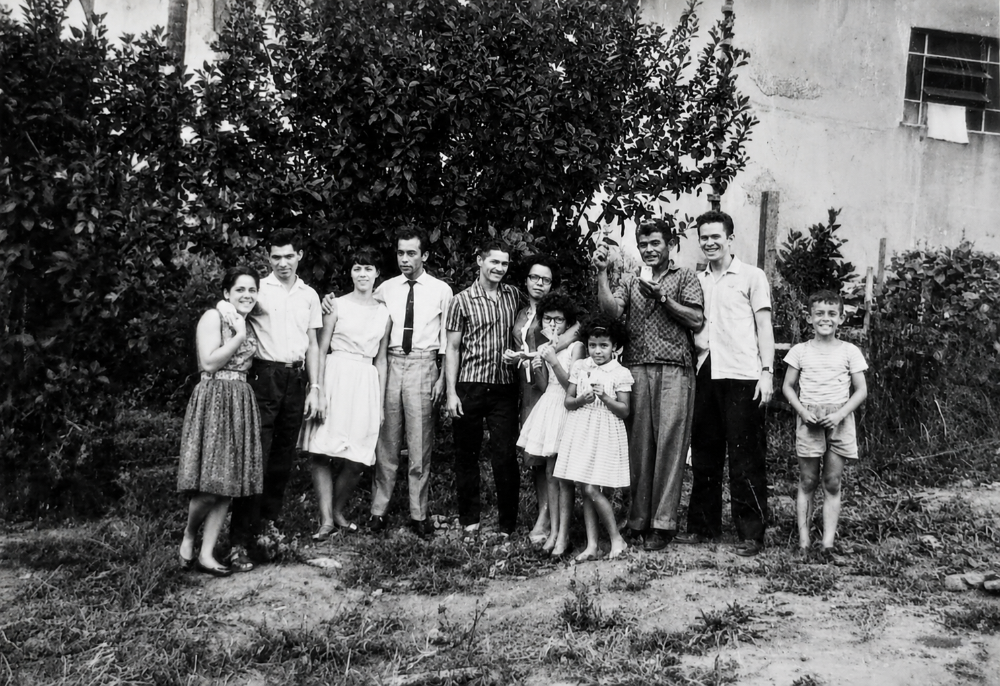

A Vida é Feita de Lembranças
"Historia magistra vitae" — A história é a mestra da vida. Uma jornada épica através do sertão, da política e da fé que moldaram gerações brasileiras.
"Carpenter tua poma nepates. O que semeamos hoje, nossos netos colherão amanhã. Este livro é o pomar da memória brasileira."
Fragmentos de uma História
Explore os pilares fundamentais que sustentam esta narrativa de resistência e tradição.
As Raízes
A genealogia de uma família que atravessou séculos de transformação no coração do Brasil.
A Fé
A religiosidade popular e a espiritualidade como bússolas em tempos de incerteza.
A Política
Os bastidores do poder local e nacional vistos pelos olhos de quem viveu a história.
O Social
A construção de comunidades, as festas, os lutos e a vida cotidiana que pulsa em cada página da obra.

Francisco de Souza
Escritor e guardião das memórias que o tempo insiste em apagar. Com uma carreira dedicada ao estudo da alma brasileira, Francisco ou Chico transforma arquivos em poesia.
"Escrever este livro não foi apenas um exercício literário, mas um resgate de mim mesmo e de todos aqueles que vieram antes. É um tributo à persistência humana diante do esquecimento."
Entre em Contato
Para palestras, eventos literários ou encomendas especiais da obra autografada.